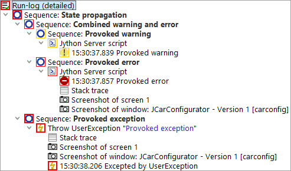
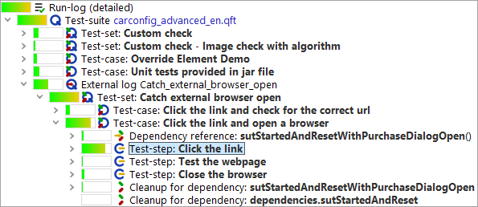

| Version 6.0.3 |
The whole point of creating automated tests is to uncover problems in the SUT. Therefore we can justifiably expect the tests to fail occasionally.
After the execution of a test has finished, a message will appear in the status line that will hopefully say "No errors". If something went wrong, the numbers of warnings, errors and exceptions that occurred is shown. Additionally an error dialog may pop up. In that case you will need to find out what went wrong.
For some problems the cause may be obvious, but very often it is not. First and foremost in this case is the need to determine whether the test failed due to a bug in the SUT or whether the SUT behaved correctly but the logic of the tests was wrong. The dilemma here is that any potential problem in the SUT must be duly reported as soon as possible, yet every false bug report is a waste of time and will cause resentment among the developers. Therefore, each problem needs to be thoroughly analyzed and every alleged bug in the SUT should ideally be reproducible before a report is submitted.
QF-Test supports testers in this crucial task in two ways. A detailed log is created for each test-run that holds all the relevant information for post mortem error analysis, including screenshots taken at the time that an error occurred. The integrated test debugger helps with analyzing and understanding the flow of control and information during a test-run.
 The video 'Error analysis'
shows a brief example for error handling.
The video 'Error analysis'
shows a brief example for error handling.
During test replay QF-Test creates a run-log that records everything that is going on. The run-logs for recent tests are accessible from the »Run« menu, the current or most recent run-log can also be opened by typing [Ctrl-L] or the respective button in the toolbar. See subsection 7.1.6 for information about options influencing run-log creation.
The structure of a run-log is similar to that of a test-suite, but there are subtle differences. Nodes are added to the run-log when they are executed. 'Setup' and 'Cleanup' nodes, for example, are typically executed more than once, in which case multiple copies will be recored in the run-log as shown below:
|
|
|
||||||
|
| Figure 7.1: A simple test and its run-log | ||||||
A run-log is the essential resource for determining what went wrong in a test, where it went wrong and maybe even get an idea about why it went wrong. Therefore the emphasis is on completeness of information rather than readability and a run-log should not be confused with a report or summary. Report generation is covered in chapter 21.
In addition to the nodes copied from the test-suite, a run-log contains failure information, optional annotations, various kinds of messages as well as information about variable expansion and run-time behavior.
The information gathered from a long test-run accumulates and can eat up enormous amounts of memory and QF-Test
has several means to cope with that. The best one, which is also the default, is to create split run-logs as
described in subsection 7.1.5. The resulting *.qzp files in ZIP format not only
preserve memory on disk - partial run-logs can be saved during test execution and removed from memory to free
up necessary space. The same applies when processing logs, e.g. for report creation. The older option
Create compact run-log as well as the alternative file formats *.qrz and
*.qrl add flexibility but are mostly retained for compatibility reasons.
There are three kinds of failures differing in the level of severity:
ComponentNotFoundException, for
example, is thrown when no component in the SUT matches the
intended target for an event. A list of all possible exceptions is
available in chapter 39.
Each node of a run-log has an associated state which can be one of normal, warning, error or exception. This state is visually represented by a frame around the node's icon which is orange for warning, red for error and bold red for exception.
|
|  | ||
|
| Figure 7.2: Error states in a run-log | ||
As shown in the (somewhat reduced) screenshot above, error states propagate from bottom to top. The exception state takes precedence over the error state, which in turn overrides warning. The most severe kind of error that propagates to the top of the tree determines the final result of a test and QF-Test's exit code when run in batch mode (see section 40.3).
If necessary, the propagation of errors can be restricted for all kinds of 'Sequence' nodes with the help of the 'Maximum error level' attribute. This can be useful for sequences which are known to contain errors that should not be taken into account just yet. Exceptions can be handled with the help of the 'Try' and 'Catch' nodes. The 'Maximum error level' attribute of the 'Catch' node determines the state to propagate for a caught exception.
All of the basic editing methods for a run-log are similar to those for a test-suite. One significant difference is that can neither add or remove any nodes nor edit the attributes of the nodes copied from the test-suite. You can add annotations though, for example to document the reason for an error if it is known.
The first question to answer when looking at a run-log is "What happened"?
The Button, or »Edit«-»Find next error«, [Ctrl-N] for short, moves the selection to the next place at which an error actually occurred.
Respectively, or »Edit«-»Find previous error« ([Ctrl-P]) moves backwards.
The option Skip suppressed errors determines whether to ignore errors that didn't propagate up to the root node. There's a menu item shortcut »Edit«-»Skip suppressed errors« to quickly toggle the latter option.
The next question might be "Where did this happen?".
Though a run-log is similar in many ways to a test-suite, the connection isn't always obvious. The function »Edit«-»Find node in test-suite« ([Ctrl-T]) will take you to the exact node in the test-suite that is represented by the selected node in the run-log, always provided that the test-suite can be located and hasn't changed in a way that prevents this. If the run-log is loaded from a file, the corresponding test-suite may not be located at the same place as when the test was executed. If the test-suite cannot be found, a dialog will pop up that lets you select a different file. In case you select a wrong file or some other test-suite is found instead of the one the run-log was created from, you may end up at some totally different node, or none at all. In that case you can use the menu item »Edit«-»Locate corresponding test-suite« to explicitly change the test-suite.
If you want to set the link between the file path of the executed test-suite and the file path where you develop the test-suite permanently you can do so in the options menu for the log-file as explained in Directory map for test-suites.
QF-Test tracks the start time and the time spent for each node executed during a test, the latter in two forms: 'Real time spent' is the wall time elapsed between entry and exit of the respective node. It includes explicit delays introduced in nodes via the 'Delay before/after' attribute, user interrupts when debugging tests or other overhead like taking screenshots. The actual time spent testing is collected in the 'Duration' attribute, making it a better indicator for the performance of the SUT.
To get a better understanding of the run-time behavior of a test-run you can activate display of duration
indicators via the toolbar button  , the menu »View«-»Show relative duration indicators« or the option Show relative duration indicators. A colored bar is
shown for each node with the length based on the percentage of time spent in the node relative to the time
of its parent node. Bottlenecks in the performance of a test-run can be located by drilling down into the
nodes with the longest bars:
, the menu »View«-»Show relative duration indicators« or the option Show relative duration indicators. A colored bar is
shown for each node with the length based on the percentage of time spent in the node relative to the time
of its parent node. Bottlenecks in the performance of a test-run can be located by drilling down into the
nodes with the longest bars:
|
|  | ||
|
| Figure 7.3: Display of duration indicators in the run-log | ||
Via the option Duration indicator kind or the sub-menu »View«-»Duration indicator kind« the display can be toggled to show the relative duration, real time or both. The latter is especially helpful but takes a bit of getting used to.
A noteworthy feature of QF-Test's run-log is the ability to quickly accept the actual values of a failed 'Check' node as good. When QF-Test logs a failed 'Check' it includes the complete current state of the 'Check' node's target component in the SUT. This is much more useful than the failure message alone, which, for example, might just tell you that a table column has 10 rows instead of the expected 9, but not what its contents are.
If you are analyzing a failed 'Check' and see that the value in the SUT was actually correct and the expected value stored in the test-suite wrong, you can press [Ctrl-U] or select »Update check node with current data« from the context menu to accept the data from the failed 'Check' as the new correct value for the 'Check' node.
Warning: QF-Test currently doesn't preserve regular expressions in 'Check text' or 'Check items' nodes, they will simply get overwritten.
Run-logs for long-running tests can get very large and consume an enormous amount of memory, even more so in case many screenshots are kept. Compact run-logs can help, but not enough to make tests that run for days on end possible without turning off the run-log entirely. The best way to overcome the memory problem are split run-logs.
For split run-logs, whenever a certain part of a test has finished, QF-Test takes the run-log for that part, removes it from the main run-log, saves it to a separate file and replaces it with a single node that references that file. The partial logs are complete run-logs in themselves and can be viewed and archived independently, though normally they are accessed through the main run-log. When navigating the main run-log or when creating reports, QF-Test transparently loads the partial run-logs from the separate files as required and removes them from memory when no longer needed. This makes it possible to navigate huge run-logs while still retaining a relatively small memory footprint. Of course operations like searching or report creation that need to traverse the whole run-log become slower, but jumping from error to error remains quite fast and loading the main run-log is sped up drastically.
There are two ways for storing a main run-log and its partial logs: All combined
together in a single ZIP file with the extension .qzp or with the partial
logs in a separate directory. The latter is named after the main run-log with the
extension .qrl or .qrz removed and the suffix
_logs appended. Inside a .qzp ZIP file the same layout is used
so that it is possible to zip or unzip files manually without breaking the internal
references in the run-log. This compatibility is also the reason why by default partial
logs inside the ZIP are are stored compressed with the extension .qrz. This
is slightly less efficient than storing uncompressed .qrl files, but that
way a .qzp run-log can be unzipped without its overall size exploding.
To make use of split run-logs you can explicitly define points at which a run-log is broken and split into parts. This is done via the 'Name for separate run-log' attribute of 'Data driver', 'Test-case', 'Test-set', 'Test call' or 'Test-step' nodes. When used with a 'Data driver', the logs for each iteration are saved separately, in the other cases the node with the 'Name for separate run-log' attribute is split off. Otherwise partial run-logs are split off automatically when they reach a certain size. This functionality can be configured via the option Minimum size for automatic splitting (kB).
When working with split run-logs it is advisable to turn Create compact run-log off, in order to keep all details in the run-log. This will consume a bit more disc space, but is very helpful when analyzing errors.
Split run-logs are also very handy for tracking the progress of a test in batch mode. In that context it is extremely useful that the file names for the partial logs can be created using the same placeholders as when specifying the name of the main run-log on the command line. In particular the error state of the partial log can be made part of its filename. Please see the documentation for the attribute 'Name for separate run-log' for details.
There are several options affecting the creation of run-logs and their content. Among others, you can choose whether to create compact or detailed run-logs, whether to log screenshots of the whole screen and/or the client windows or whether to suppress run-logs altogether. All options are explained in detail in section 37.8.
If several people are involved in the test development process, it might be useful to generate a test-suite from the run-log directly. The generated test-suite could be used to reproduce a test-run on-the-fly without having the entire structure of test-suites.
You can create a test-suite from the run-log via performing a right mouse click at any node in the run-log and selecting »Create test-suite« from the context menu.
QF-Test creates a new file containing all executed steps of the respective tests under 'Extras' as well as the used components.
Note QF-Test only adds the executed steps to the new test-suite. Variables will be expanded immediately, so you can only see their value in the new file. Organizational nodes like procedures or control structures will not become created.
You have to set a couple of options in order to get this feature properly working (Under Run-log -> Content):
If you have access to all test-suites, you can use also use information from them for creating the new one. Therefore select »Create test-suite from existing structure« from the context menu. In contrast to the approach described above, it is not required to switch on the option Log parent nodes of components.
During test development you might face the requirement, that you have a run-log with the test-results for your test-cycle. But in several cases you might need to re-run one test-case which was failing due to subtle reasons during the previous test-run. Once that re-run has taken place you would like to update your test-report to have that new execution in that test-report instead the previous one. For this purpose it's possible to merge run-logs via command line.
A typical merge command looks like this:
|
|
|
|||
|
| Example 7.1: Sample call of merging run-logs for update | |||
The command above takes the result of the re-run from the run-log rerun.qzp, searches for the test-case in the
run-log full_log.qzp and store the updated run-log to newresult_log.qzp. If you set the
parameter mergelogs.mode to merge the new test-cases will be added to the existing structure
and the original test-cases will remain in the run-log.
Another case might be to add run-logs of several test-runs into one large run-log in order to get a more readable report. This kind of merging is also implemented and can be achieved by another command line call like this:
|
|
|
|||
|
| Example 7.2: Sample call of merging run-logs for adding | |||
The call above takes the run-logs run1.qzp and run2.qzp and creates a run-log newresult_log.qzp
which contains the results from both run-logs. In this mode the parameter mergelogs.masterlog is optional.
If the parameter is set, the corresponding run-log will be used as a root for a resulting run-log.
As in any development environment, at some point the need will arise to debug problems introduced into a test-suite which cannot readily be solved by a straight-forward analysis of the elements and structure of the suite. To this end, QF-Test includes an intuitive debugger. Those of you familiar with debugging programs in Java or other programming languages will find this debugger similar in function and usefulness.
The QF-Test debugger can be started directly by selecting a node (or some nodes) to execute and pressing the step-in or step-over buttons, or by using the menu operations »Debugger«-»Step in« and »Debugger«-»Step over« or the keyboard shortcuts [F7] and [F8]. See subsection 7.2.3 for a detailed explanation of these operations.
If you are running tests on your test-suite and use the play button to start execution (see section 4.2), the debugger will normally not be entered. However, the debugger will be activated automatically when any one of the following occur:
When the debugger suspends execution of the test, the node about to be executed will be shown with a colored frame around its icon that reflects the cause for the break. If the debugger is stopped due to manual intervention, a user breakpoint or when stepping, the frame will be black. When stopping due to a warning, error or exception the frame will be orange, red or thick red respectively, exactly like the error indicators in the run-log.
Note When the debugger is entered due to a warning, error or exception it will move execution back to the beginning of the node that caused it, giving you a chance to fix the cause of the problem and re-execute that node. If this is undesirable or impossible you can simply skip the node (see subsection 7.2.3).
The debugger can be run either from within the normal test-suite view, or by opening a dedicated debugger window by selecting »Debugger«-»Show debugger window« once the debugger has been entered.
You can also cause the debugger window to open automatically whenever the debugger is entered by setting the option Always open debugger window in the global options dialog or under the »Debugger«-»Options« menu. If you open or close the debugger window explicitly, this is considered a "manual override" and this option will be ignored for the rest of the test-run.
The debugger window is similar to a normal test-suite window. You can select nodes and edit their attributes, but you cannot delete or insert nodes, there are no file operations and no recorder. For the more complex operations you can quickly jump from the debugger window to the same node in the respective test-suite window by pressing [Ctrl-T] or selecting »Find node in test-suite« from the »Edit« menu or the context menu.
The lower half of the debugger window shows the nodes that are binding variables on the primary and fallback variable stacks (see chapter 6). For the primary stack all nodes are shown, even if they are not binding any variables. This is useful because it serves as a kind of stack-trace for the current point of execution of the test-run. You can double-click on any node to quickly navigate to the node in its associated test-suite.
A single click on a node brings up its variable bindings in the right half of the variable display. There the variable values can be edited, new variables can be added or existing ones removed. These changes immediately affect the current test-run, but are of a temporary nature. They are not propagated to the nodes in which the variables were bound in the first place.
Most of the debugger commands are similar to those of any other debugger. However, some additional commands are included that deal with special situations.
Step-wise debugging of a test-suite is available through three operations:
The skip functions expand the QF-Test debugger in a powerful way which is not typically possible for a debugger in a standard programming environment. In short, they allow you to jump over one or more nodes without having to execute those nodes at all.
Even more powerful is the ability to continue the test-run at any arbitrary node, even in a completely different test-suite. QF-Test will keep as much of the current execution context as possible, including variable bindings. The closer the new target location is to the current point of execution, the more information can be salvaged.
You can switch execution to a different node by pressing [Ctrl-,] or by selecting the menu item »Run«-»Continue execution from here« or the respective item in the context menu. When you do so, execution will not continue immediately, only the next node to be executed will change. You can continue the test as usual by single-stepping or resuming the test-run.
The following additional commands are available:
Setting a breakpoint on a node will tell the debugger to suspend execution just before it enters that node. Breakpoints are displayed in the tree-view by prepending "(B)" to the name of a node.
Breakpoints can be set or removed individually with [Ctrl-F8] or with the »Debugger«-»Breakpoint on/off« menu item. After finishing a debugging session you can use »Debugger«-»Clear all breakpoints« to remove any breakpoints that might have been left hanging around. This command will remove all breakpoints from all test-suites.
Note Breakpoints are transient and will not be saved with the test-suite.
| Last update: 9/6/2022 Copyright © 1999-2022 Quality First Software GmbH |